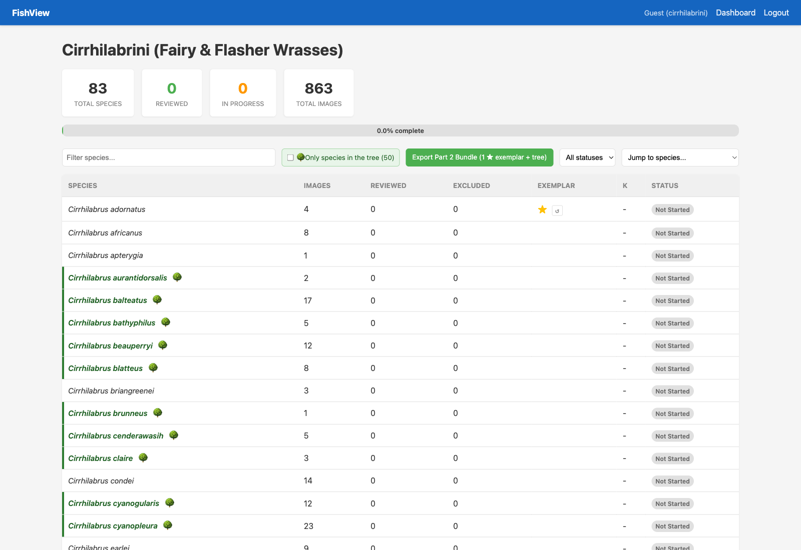
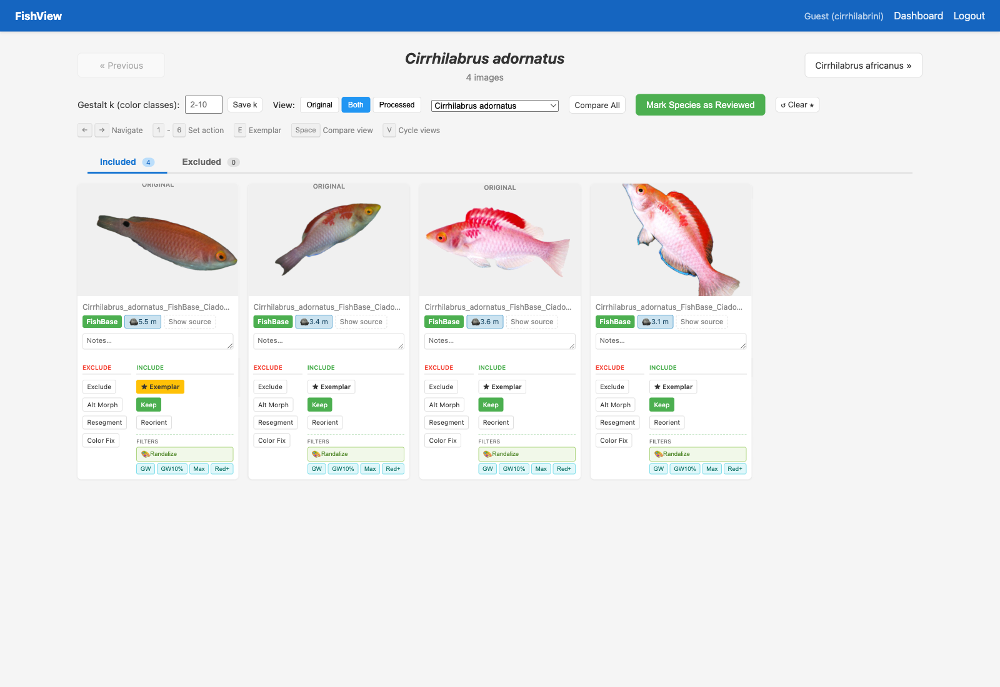
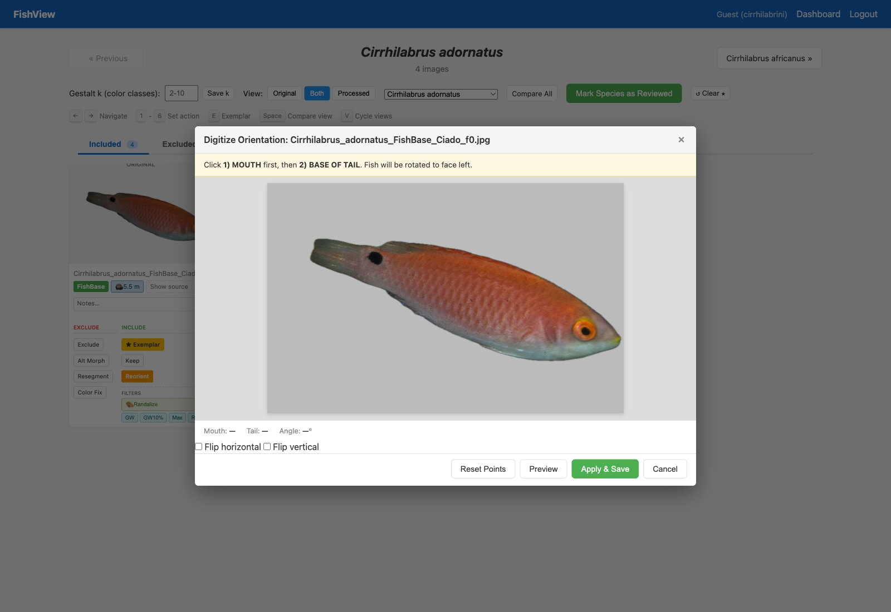

Demo 7 — Part 2: Build Your Own Exemplar Bundle
EEB 187 · Week 8 · Wednesday May 20, 2026
Goal
Starting from your group’s family tree and per-species image library on the FishView server, you’ll produce one exemplar image per species and download a bundle that pairs those images with the tree. The bundle is the input for the R analysis at the end of class.
This is the in-class group-work half of Demo 7. No R coding yet — that comes once the bundle is in your hands.
The FishView server lives at http://164.67.78.200:5052/ and is only reachable from UCLA campus WiFi or UCLA Bruin Secure VPN. From off-campus with no VPN you’ll get a connection-refused error.
Step 1 — Log in
- Open http://164.67.78.200:5052/
- Enter your group code and your first name:
| Group | Family | Code |
|---|---|---|
| 1 | Balistoidea (triggerfishes) | trigger-2026 |
| 2 | Pomacanthidae (angelfishes) | angel-2026 |
| 3 | Scarinae (parrotfishes) | parrot-2026 |
| 4 | Cirrhilabrini (fairy wrasses) | fairy-2026 |
| 5 | Acanthuridae (surgeonfishes) | tang-2026 |
| 6 | Hypsigenyinae (hogfishes) | hog-2026 |
| 7 | Halichoerine (Coris-allies wrasses) | coris-2026 |
- You land on your family’s student dashboard.

What to notice on the dashboard:
- The 🌳 Only species in the tree toggle (top of the controls row) hides species that aren’t in your phylogeny — turn it on so Part 2 only shows species you can use.
- The green Export Part 2 Bundle (N ★ exemplars + tree) button is your final step; it’s disabled until you’ve starred at least one species.
- The Exemplar column shows ★ once you’ve picked an image for that species, with a ↺ reset icon if you want to backtrack.
Step 2 — Pick exemplar images
Click into a species → review page. You’ll see one card per available image.

On each image card:
| Action | When to use |
|---|---|
| ★ Exemplar | The single best image for that species. Click this on exactly one card per species. |
| Keep | Image is fine but not your top pick. |
| Exclude | Image is bad for your purposes (back-facing fish, juvenile, wrong species, etc.) |
| Reorient | The fish isn’t facing left — open the digitize modal (see Step 2a). |
| Alt Morph, Resegment, Color Fix | Flag for later review; doesn’t affect Part 2 export. |
Pick at least 3 species from at least 2 different genera. More is fine — the export will ship every exemplar you’ve starred, no cap. The R analysis at the end of class will work with whatever count you bring back.
Step 2a — Reorient if the fish isn’t facing left
If the fish in the photo is tilted or facing the wrong way, click Reorient on that image card. The Digitize Orientation modal opens:

- Click on the fish’s mouth first (or just in front of it).
- Click on the base of the tail (caudal peduncle).
- The Mouth / Tail / Angle readout fills in.
- If the fish is also mirrored relative to a left-facing view, tick Flip horizontal and/or Flip vertical. The checkboxes persist — if you re-open the modal for an image you’ve previously flipped, the checkboxes come back already ticked.
- Click Apply & Save (the green button).
Important: Clicking the mouth and tail points alone does NOT save the rotation — you have to click Apply & Save for the server to write the rotated PNG. The bundle download will use the rotated image once that save succeeds.
Step 2b — Backtracking with ↺ reset
The dashboard has small ↺ icons in two places:
- Next to a row’s ★ → clears that species’ exemplar so you can pick a different one.
- Next to a “Reviewed” badge → un-marks the species back to in-progress.
Same controls show up on the review page as ↺ Clear ★ and ↺ Unmark buttons. Both prompt for confirmation. The saved Gestalt-k value survives an unmark — only the status flips.
Use these freely. Second-guessing your exemplar choice is normal.
Step 3 — Export the Part 2 bundle
Once you’ve starred all the species you want:
- Go back to the dashboard.
- Click the green Export Part 2 Bundle (N ★ exemplars + tree) button. N is your current count.
- Your browser downloads
<family>-part2-bundle.zipcontaining:
<family>-part2-bundle.zip
├── images/
│ ├── Genus_species_1.png (oriented if you reoriented; segmented otherwise)
│ ├── Genus_species_2.png
│ └── … (one per ★ exemplar — every species you starred)
├── <family>-tree.tre (the family's phylogeny, NEXUS or Newick)
├── picked_species.txt (the species names, one per line)
├── picked_tip_labels.txt (exact tree-tip labels, for ape::keep.tip())
└── README.txt (contents summary + any image substitutions)- Unzip it into your demo working folder under
data/my-fish/(so the folder tree above sits insidedata/my-fish/).
Substitution notes in README.txt: If one of your starred images doesn’t have a segmented PNG on disk yet, the bundle falls back to a different segmented PNG of the same species and notes the substitution. Open README.txt if you want to see what was swapped — you can re-pick that species on the dashboard and re-export.
Step 4 — Run the Part 2 R analysis
Back in RStudio, you’ll plot the pruned tree with your exemplar images at the tips. The R script you’ll use lives at:
- scripts/part2-tree-with-images.R (one-time download via the worksheet)
The worksheet’s Part 2 section walks you through:
- Unzipping the bundle into
data/my-fish/. - Sourcing
scripts/part2-tree-with-images.R(it’s downloaded for you automatically by the worksheet’s first chunk). - Calling
plot_part2(family = "<your family>", bundle_dir = "data/my-fish", out_pdf = "results/part2-tree-with-images.pdf").
The output is a single PDF showing your group’s exemplar species pinned to the tips of the pruned family tree. Use it as the figure for your Part 2 writeup.
Continue to → demo7-worksheet.html (scroll to the Part 2 section).
What to bring to Part 3
For the writeup, you’ll need three things from this session:
- The downloaded
<family>-part2-bundle.zip(keep it — Part 3 reads from it too). - The rendered PDF
results/part2-tree-with-images.pdf. - One short paragraph (2–3 sentences) answering: Do your three species’ color patterns appear conserved within your family’s phylogeny, or do they look randomly distributed? Use what you see in your figure as evidence.
If something goes wrong
| Problem | Fix |
|---|---|
| “Connection refused” when you open the server URL | Connect to UCLA Bruin Secure VPN, then refresh. |
| Dashboard shows no 🌳 chips | Your group’s tree may not be loaded yet — flag to a TA. |
| Export button stays grey | You haven’t ★-starred any species yet. Click into a species, pick its best image, hit ★ Exemplar, then go back to the dashboard. |
| Reorient looks rotated in the modal but the dashboard image isn’t updated | You clicked the landmarks but forgot Apply & Save. Open the modal again and finish it. |
Bundle ZIP arrives but picked_tip_labels.txt has fewer lines than your ★ count |
One or more of your picks isn’t on the phylogeny — re-pick from species with a 🌳 chip. |